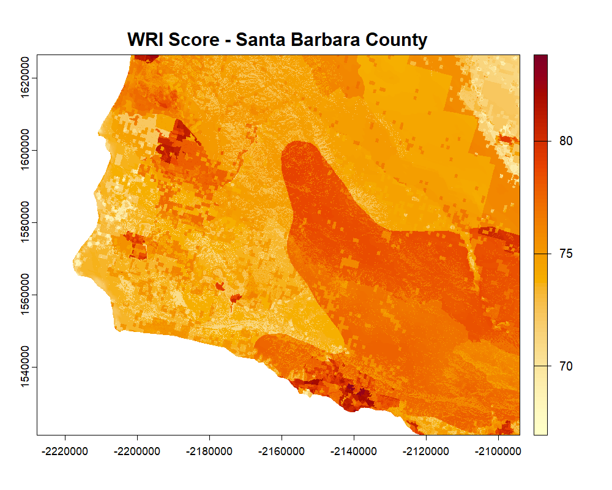

Retrieving a Layer by Bounding Box
Source:vignettes/retrieving-layer-bounding-box.Rmd
retrieving-layer-bounding-box.RmdThis vignette shows the simplest data retrieval workflow: request one
layer for one rectangular area of interest. get_layer()
opens the hosted Cloud Optimized GeoTIFF (COG) through GDAL and uses
range requests, so the user does not need to download the full raster
file.
The Basic Call
get_layer() takes a layer ID, an aoi
argument, and for numeric bounding boxes an explicit
aoi_crs. Supply the bounding box as
c(xmin, ymin, xmax, ymax). The function checks overlap
against the layer extent and returns a terra raster in the COG native
projection.
# Santa Barbara County, CA in WGS84
sb <- c(-120.7, 34.4, -119.4, 35.1)
wri <- get_layer("WRI_score", aoi = sb, aoi_crs = "EPSG:4326")
wri
#> class : SpatRaster
#> dimensions : 482, 756, 1 (nrow, ncol, nlyr)
#> resolution : 90, 90 (x, y)
#> coord. ref. : NAD83 / Conus Albers (EPSG:5070)
#> name : WRI_scorePlotting the Result
plot(
wri,
main = "WRI Score -- Santa Barbara County",
col = hcl.colors(100, "YlOrRd", rev = TRUE)
)
Figure 4. WRI score for a bounding box over Santa Barbara County, CA, returned by get_layer(). Darker red values indicate higher WRI score values.
Working With the Result
Because get_layer() returns a standard
SpatRaster, the full terra ecosystem is immediately
available for analysis:
# Summary statistics
global(wri, fun = c("mean", "sd", "min", "max"), na.rm = TRUE)
#> mean sd min max
#> 0.531 0.112 0.18 0.894
# Write to disk as a GeoTIFF
writeRaster(wri, "wri_score_sb.tif")
# Reproject to WGS84 for export to other tools
wri_wgs84 <- project(wri, "EPSG:4326")CRS Shorthand
aoi_crs accepts any format that terra recognizes: an
integer EPSG code, a character string, or a PROJ or WKT string. These
are all equivalent:
Retrieving Multiple Layers for the Same Area
Use lapply() to iterate over a vector of layer IDs. All
layers share the same extent and resolution once retrieved, so the
results can be stacked directly with terra::c():
water_ids <- subset(
wri_overview_df(),
wri_domain == "water" & data_type == "aggregate"
)$id
water_layers <- lapply(
water_ids,
get_layer,
aoi = sb,
aoi_crs = "EPSG:4326"
)
names(water_layers) <- water_ids
stack <- do.call(c, water_layers)
plot(stack, col = hcl.colors(100, "YlOrRd", rev = TRUE))Extent Overlap and Error Handling
If the bounding box extends partly outside the COG coverage area,
get_layer() returns the overlapping portion and issues a
warning naming the sides that overflowed:
wri_big <- get_layer(
"WRI_score",
aoi = c(-130, 30, -55, 55),
aoi_crs = "EPSG:4326"
)
#> Warning: Requested bbox extends outside the layer extent to the east.If the bounding box falls entirely outside the covered area, the function stops with an informative error before making any network request:
tryCatch(
get_layer(
"WRI_score",
aoi = c(-80, -90, -60, -70),
aoi_crs = "EPSG:4326"
),
error = function(e) message("Error: ", conditionMessage(e))
)
#> Error: Requested bbox does not overlap the layer extent.Use a polygon boundary in place of a rectangular bounding box when you already have a study area saved as a spatial object or file.